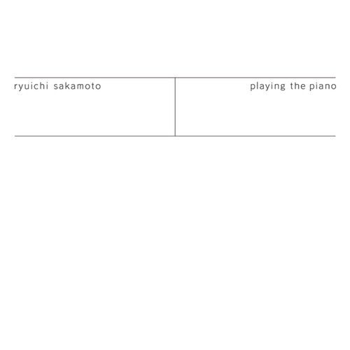

ryuichi sakamoto
playing the piano
류이치 사카모토
류이치 사카모토
일본의 작곡가이자 뮤지션. 세계적으로 높은 인지도를 가지고 있으며,
특히 영화 음악을 통해 대중에게 널리 알려졌다.
골든글로브상과 그래, 아시아 최초 아카데미 음악상 수상자.

playing the piano
누군가가 내게 들려준 피아노
누군가에게 들려주고 싶은 연주
by 류이치 사카모토